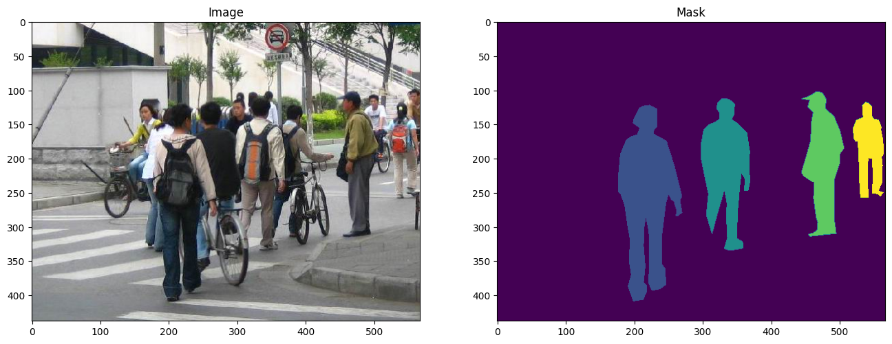

pytorch 2.2.1-py3.10_0
torchaudio 2.2.1-py310_cpu
torchvision 0.17.1-py310_cpu| Penn-Fudan Database sample (image, mask) |
- Dataset: Penn-Fudan Database for Pedestrian Detection and Segmentation
- number
- (total) 170 images
- (total) 345 instances of pedestrians1
- usually used benchmark as segmentation
- https://www.cis.upenn.edu/~jshi/ped_html/
- number
- Model: pretrained Mask R-CNN
배경지식
Selective Search for Object Recognition
- Sliding window2: 목표는 이미지의 전체 영역을 다양한 크기의 window로 sliding 시키고 각 window에 목표 object가 포함되는지 탐색한다. 컴퓨팅 리소스를 비효율적으로 사용한다.
- Region Proposal3: 직관적으로 생각했을 때 전체 이미지를 확인하는건 당연히 비효율적이다.
물체가 있을만한 구역(RoI; Region of Interest)을 살피는게 중요하다.selective search: 논문에서 밝힌 바에 따르면 해당 알고리즘은 다음 목표를 가지고 설계되었다.
selective search example - Capture All Scale: 객체는 어떤 형태로든 나타날 수 있다. 따라서 위의 이미지처럼 다양한 크기의 bbox를 만들어 사용한다.
- hierarchical grouping algorithm; segmentation에서 일반적으로 사용하는 bottom up grouping이 비슷한 특징을 가진 것끼리 묶는 방식이라면 selective search는 이미 비슷한 특징을 가진 픽셀을 분류해두었다. 따라서 같은 객체에 해당하는 것끼리 묶기만 하면 된다.
- Diversification: 특정 구역을 지정하지 않는다. 구역은 인접한 곳의 색깔, 질감 등을 고려하여 설정되며 밝기까지 이 구역 생성 방법에 영향을 미친다.4
- Fast to Compute: 이렇게 다양한 조건을 고려하면 컴퓨팅 리소스를 많이 사용하지 않을까? 아니다. 이 알고리즘의 개발 목표부터 효율 추구였다.5 위와 같은 bbox 생성 과정6은 컴퓨터 병목현상7 8에 걸리지 않을 것을 목표로 한다. 결국 2.1.에서 언급한 hierarchical algorithm(or hypotheses)가 제대로 작동했기에 효율적인 컴퓨팅 리소스 사용이 가능해졌다.
- Capture All Scale: 객체는 어떤 형태로든 나타날 수 있다. 따라서 위의 이미지처럼 다양한 크기의 bbox를 만들어 사용한다.
object detection을 한번에 진행하느냐, 두단계에 나눠서 진행하느냐
| Zou et al. 2019. Object Detection in 20 Years: A Survey |
- 1-Stage는 RoI가 아니라
Anchor box를 추출한다. 먼저 이미지를 그리드 단위로 나누고, 그리드에서 confidence matrix를 생성한다. 이때문에 이미지의 맥락적 이해도가 낮고 2 stage보다 정확도가 떨어질 수 있지만 속도가 빠르다는 장점이 있어 영상처리 등에서 사용된다.- e.g. YOLO, SSD
- 2-Stage는 고전적인 방식처럼 1.
RoI를 탐지하고 2. Classification 또는 Box Regression을 진행한다. 여기서 bbox를 뽑는 과정은 box regression, classification은 이미지 자체의 답을 분류하는 일이다.- e.g. R-CNN계열: Fast R-CNN, Faster R-CNN
based on top of Faster R-CNN; a model that predict both bounding boxes and class scores for potential objects in the image
regional proposal에서 selective search가 아닌 CNN을 사용한다. (=
RPN)
Faster R-CNN의 한 종류 중 하나다. 분기점은 어디에 있을까? R-CNN이 ’potential object in the image’를 찾아내는 과정이었다면 Mask R-CNN은 그 범주를 bounding box9 와 segmentation10 하여 구체화한다. 같은 class여도 다른 객체로 인식하는 instance segmentation task에서 사용하기 위해 개발되었다.
Faster R-CNN: Towards Real-Time Object Detection with Region Proposal Networks
- Region Proposal Network, RPN
- 앞서 언급한 것과 같이 CNN으로 이루어져 있다.
- 하나의 CNN으로 region proposal을 제안하고, object detection도 수행한다. = detection network인 R-CNN과 연산을 공유한다.
- 이 과정이 FPN의 핵심이고, Mask R-CNN도 해당 과정을 채택했다고 직접 언급했다.
- 과정
- 특성 추출; 이 과정을 어떻게 진행하느냐에 따라 방법론이 달라진다. (RPN)
- 이미지를 사전학습 된 Conv Layer에 통과시켜 feature map을 추출한다.
- backbone network를 얻은 feature map의 각 위치에서 sliding window를 수행한다.11
- [발췌] slide a small network over the convolution feature map output
- small network! takes input as an \(n \times n\) spatial windows
- [발췌] slide a small network over the convolution feature map output
- region proposal 생성을 위해 k개의 anchor box를 사용한다.
- 최종적으로 bbox를 결정하게 된다.
- RoIPool을 통해 bbox cls, bbox reg를 진행하는 과정 (Fast R-CNN identical)
- classification 과정으로, k개의 box에 객체가 있는지 없는지 binary score로 결과를 준다.
- regression layer가 k개 box의 좌표를 출력한다.12
- 특성 추출; 이 과정을 어떻게 진행하느냐에 따라 방법론이 달라진다. (RPN)
- Mask R-CNN
- RPN에서 RoI를 가져오고, mask branch를 추가한 형태다.
- bbox reg branch와 평행으로 추가
- mask branch; 각 RoI에 작은 FCN을 추가한 형태
- RPN에서 RoI를 가져오고, mask branch를 추가한 형태다.
라이브러리
데이터셋 생성
import matplotlib.pyplot as plt
from torchvision.io import read_image
image = read_image("data/PennFudanPed/PNGImages/FudanPed00046.png")
mask = read_image("data/PennFudanPed/PedMasks/FudanPed00046_mask.png")
plt.figure(figsize=(16, 8))
plt.subplot(121)
plt.title("Image")
plt.imshow(image.permute(1, 2, 0))
plt.subplot(122)
plt.title("Mask")
plt.imshow(mask.permute(1, 2, 0))
"""데이터를 한번에 불러오기"""
class PennFudanDataset(torch.utils.data.Dataset):
# `root dir` 에서의 `root`
def __init__(self, root, transforms):
self.root = root
self.transforms = transforms
# load all image file
# ensure that they are aligned; img, mask 한꺼번에 다루기 위해
self.imgs = list(sorted(os.listdir(os.path.join(root, "PNGImages"))))
self.masks = list(sorted(os.listdir(os.path.join(root, "PedMasks"))))
def __getitem__(self, idx):
# load images and masks
img_path = os.path.join(self.root, "PNGImages", self.imgs[idx])
mask_path = os.path.join(self.root, "PedMasks", self.masks[idx])
# 위에서 import 한 torchvision의 read_image사용
img = read_image(img_path) # [3, 397, 396]
mask = read_image(mask_path) # [1, 397, 396]
# 고유한 값 추출
# torch.unique(input:Tensor) -> return the unique elements of the input tensor
obj_ids = torch.unique(mask) # [0, 1, 2] (shape: [3])
obj_ids = obj_ids [1:] # 이때 첫값은 배경: black
num_objs = len(obj_ids) # 총 채널 개수
# split the color-encoded mask into a set of binary masks
# mask: [2, 1, 1] 형태의 [0, 1]로 이루어진 행렬; binary mask
masks = (mask == obj_ids[:, None, None]).to(dtype=torch.uint8)
# bbox generate
# shape: [number of people, 4]
boxes = masks_to_boxes(mask) # [x1, y1, x2, y2], 사람의 수만큼 해당 행렬이 포함되어있다.
# label이 하나이므로 (1) 속하느냐 (0) 속하지 않느냐 로 구분된다.
labels = torch.ones((num_objs,), dtype=torch.int64)
image_id = idx
area = (boxes[:, 3] - boxes[:, 1]) * (boxes[:, 2] - boxes[:, 0])
# suppose all instances are not crowd
iscrowd = torch.zeros((num_objs,), dtype=torch.int64)
# Wrap sample and targets into torchvision tv_tensors:
img = tv_tensors.Image(img)
target = {}
target["boxes"] = tv_tensors.BoundingBoxes(
boxes,
format="XYXY", canvas_size=F.get_size(img))
target["masks"] = tv_tensors.Mask(masks)
target["labels"] = labels
target["image_id"] = image_id
target["area"] = area
target["iscrowd"] = iscrowd
if self.transforms is not None:
img, target = self.transforms(img, target)
return img, target
def __len__(self):
return len(self.imgs)모델 선언
import torchvision
from torchvision.models.detection.faster_rcnn import FastRCNNPredictor
# load a model pre-trained on COCO; backbone
model = torchvision.models.detection.fasterrcnn_resnet50_fpn(weights="DEFAULT")
# replace the classifier with a new one, that has
# num_classes which is user-defined
num_classes = 2 # 1 class (person) + background
# get number of input features for the classifier
in_features = model.roi_heads.box_predictor.cls_score.in_features
# replace the pre-trained head with a new one
model.roi_heads.box_predictor = FastRCNNPredictor(in_features, num_classes)backbone
import torchvision
from torchvision.models.detection import FasterRCNN
# AnchorGenerator:
# that generates anchors for a set of feature maps and image sizes.
# The module support computing anchors at multiple sizes
# and aspect ratios per feature map.
from torchvision.models.detection.rpn import AnchorGenerator
# --- load a pre-trained model for cls --- #
# https://github.com/pytorch/vision/blob/main/torchvision/models/mobilenetv2.py
# backbone의 결과값은 ordered dict이므로 인덱싱도 가능
backbone = torchvision.models.mobilenet_v3_small(weights="DEFAULT").features
# ``FasterRCNN`` needs to know the number of output channels in a backbone.
# \because backbone의 output channel이 anchor box가 된다.
# torchvision.models.mobilenet_v2(weights="DEFAULT").features 코드로 확인 가능
# 설계상 Conv 마지막 레이어를 빠져나오면 last channel이 1280으로 된다.
backbone.out_channels = 1280
# --- RPN anchors: 5 x 3 --- #
# 5 different sizes and 3 different aspect(측면 비율)
# 각 특징 맵이 잠재적으로 다른 사이즈와 측면 비율을 가질 수 있기 때문
anchor_generator = AnchorGenerator(
sizes=((32, 64, 128, 256, 512)), # 5
aspect_ratios=((0.5, 1.0, 2.0)) # 3
)
# --- define feature map --- #
# backbone이 Tensor를 반환할 때 'feature_names'는 [0]이 될 것으로 가정
# 일반적으로 백본은 OrderedDict[Tensor] 이르모 이름을 정할 수 있다.
roi_pooler = torchvision.ops.MultiScaleRoIAlign(
featmap_names = ['0'], # List[str]
output_size=7, # 구현된 바 7x7 이었음
sampling_ratio=2
)
# --- define model --- #
model = FasterRCNN(
backbone=backbone,
num_classes=2, # binary segmentation
rpn_anchor_generator=anchor_generator,
box_roi_pool=roi_pooler
)데이터셋에 맞추어 객체 검출 (object detection, segmentation)
- 1 stage 방법론을 채택
import torchvision
from torchvision.models.detection.faster_rcnn import FastRCNNPredictor
from torchvision.models.detection.mask_rcnn import MaskRCNNPredictor
def get_model_instance_segmentation(num_classes):
# 사전학습된 모델을 불러올 것
model = torchvision.models.detection.maskrcnn_resnet50_fpn(weight="DEFAULT")
# '분류를 위해' 입력 특징을 받아온다.
in_features = model.roi_heads.box_predictor.cls_score.in_features
# 미리 학습된 헤더를 새로운 것으로 바꾸는데, 헤더란?
model.roi_heads.box_predictor = FastRCNNPredictor(in_features, num_classes)
# mask predictor'를 위한' 입력 특징의 '차원'을 얻는다.
in_features_mask = model.roi_heads.mask_predictor.conv5_mask.in_channels
hidden_layer = 256
# mask predictor 변경
model.roi_heads.mask_predictor = MaskRCNNPredictor(in_features_mask,
hidden_layer,
num_classes)
return model통합
# #| output: false
# os.system("wget https://raw.githubusercontent.com/pytorch/vision/main/references/detection/engine.py")
# os.system("wget https://raw.githubusercontent.com/pytorch/vision/main/references/detection/utils.py")
# os.system("wget https://raw.githubusercontent.com/pytorch/vision/main/references/detection/coco_utils.py")
# os.system("wget https://raw.githubusercontent.com/pytorch/vision/main/references/detection/coco_eval.py")
# os.system("wget https://raw.githubusercontent.com/pytorch/vision/main/references/detection/transforms.py")데이터 증강 및 변환
# import transforms as T # ModuleNotFoundError: No module named 'sgmllib'
from torchvision.transforms import v2 as T
def get_transform(train):
transforms = []
transforms.append(T.PILToTensor())
transforms.append(T.ToDtype(torch.float, scale = True))
if train:
transforms.append(T.RandomHorizontalFlip(0.5))
return T.Compose(transforms)테스트 코드
import utils
model = torchvision.models.detection.fasterrcnn_resnet50_fpn(weights="DEFAULT")
dataset = PennFudanDataset(root='./data/PennFudanPed/', transforms=get_transform(train=True))
data_loader = torch.utils.data.DataLoader(
dataset, batch_size=4, shuffle=True, num_workers=0,
collate_fn=utils.collate_fn)
# num_workers=0 issue >> RuntimeError: DataLoader worker (pid(s) 75278) exited unexpectedly
# 학습 시
images,targets = next(iter(data_loader))
images = list(image for image in images)
targets = [{k: v for k, v in t.items()} for t in targets]
output = model(images,targets) # Returns losses and detections
# 추론 시
model.eval()
x = [torch.rand(3, 300, 400), torch.rand(3, 500, 400)]
predictions = model(x) # Returns predictions메인 학습, 검증
if torch.cuda.is_available() : device = torch.device('cuda')
elif torch.backends.mps.is_available() : device = torch.device('mps')
else : device=torch.device('cpu')
print(f'Using {device}')Using mpsfrom engine import train_one_epoch, evaluate
# GPU: cuda -> mps
device = torch.device('mps') if torch.backends.mps.is_available() else torch.device('cpu')
# device = 'cpu'
print(f'Using {device}')
# dataset; 2 classes; background, person
num_classes = 2
# use PennFundanPed dataset, define transform
# get_transform; 위에서 정의함 - 50% 확률로 좌우 flip
dataset = PennFudanDataset('data/PennFudanPed', get_transform(train=True))
dataset_test = PennFudanDataset('data/PennFudanPed', get_transform(train=False))
# split dataset (train, test)
indices = torch.randperm(len(dataset)).tolist()
dataset = torch.utils.data.Subset(dataset, indices[:-50])
dataset_test = torch.utils.data.Subset(dataset_test, indices[-50:])
# define dataloaders
data_loader = torch.utils.data.DataLoader(
dataset,
batch_size=2,
shuffle=True,
# num_workers=4,
collate_fn=utils.collate_fn
)
data_loader_test = torch.utils.data.DataLoader(
dataset_test,
batch_size=1,
shuffle=False,
# num_workers=4,
collate_fn=utils.collate_fn
)
# get model
model = get_model_instance_segmentation(num_classes=num_classes)
# move model into device; model도 옮겨야 한다.
model.to(device)
# from torch import nn; model = nn.DataParallel(model)
# construct an optimizer
params = [p for p in model.parameters() if p.requires_grad]
optimizer = torch.optim.SGD(
params,
lr=0.005,
momentum=0.9,
weight_decay=0.0005
)
# and a learning rate scheduler
lr_scheduler = torch.optim.lr_scheduler.StepLR(
optimizer,
step_size=3,
gamma=0.1
)
# let's train it just for 2 epochs
num_epochs = 0
for epoch in range(num_epochs):
# train for one epoch, printing every 10 iterations
train_one_epoch(model, optimizer, data_loader, device, epoch, print_freq=10)
# update the learning rate
lr_scheduler.step()
# evaluate on the test dataset
evaluate(model, data_loader_test, device=device)
print("That's it!")Using mps
That's it!Loss is nan, stopping training
확인 결과: OOM - 메모리에 데이터를 올려두는 과정에서 배치를 1로 정하면 문제가 생기지 않는데, 2부터는 문제가 발생함.
# mps 사용시 발생하는 이슈;
# mps nightly 배포 당시 사용했을 때 문제없이 딥러닝이 돌아갔었는데 갑자기 안 됨.
# v2로 올라가서 생기는 문제일지도 모르겠지만 tv_tensor를 사용해야 해서
# 버전 다운그레이드는 불가능한 상황
Error: command buffer exited with error status.
The Metal Performance Shaders operations encoded on it may not have completed.
Error:
(null)
Internal Error (0000000e:Internal Error)
<AGXG13XFamilyCommandBuffer: 0x6a0739b40>
label = <none>
device = <AGXG13XDevice: 0x12e53f000>
name = Apple M1 Pro
commandQueue = <AGXG13XFamilyCommandQueue: 0x12f22ba00>
label = <none>
device = <AGXG13XDevice: 0x12e53f000>
name = Apple M1 Pro
retainedReferences = 1- source code
- pytorch github issue
- apple forum
Footnotes
보행자↩︎
Convolution에서 kernel이 특징을 추출하는 과정과 비슷해보이기도 한다. 실제로 개념은 같다.↩︎
e.g. selective search, edge boxes↩︎
이 다양성이 다양한 bbox를 생성하는데 영향을 미치는 것 같다.↩︎
비효율적이라면 sliding window를 쓰면 됐다.↩︎
‘the creation’?↩︎
CPU 혹은 GPU 중 하나의 리소스가 부족한 경우 느려지는 현상.↩︎
2012년에 발표된 논문에서 언급한 병목현상이니 해당 알고리즘은 CPU에서 동작할 것으로 보인다.↩︎
localize approximately↩︎
localize by edging↩︎
논문에서는 3x3 filter 사용↩︎
box중앙, x좌표, y좌표, height, width↩︎
그래서 RPN에서 feature map을 사용할 수 있었다.↩︎
segmentation 보충↩︎